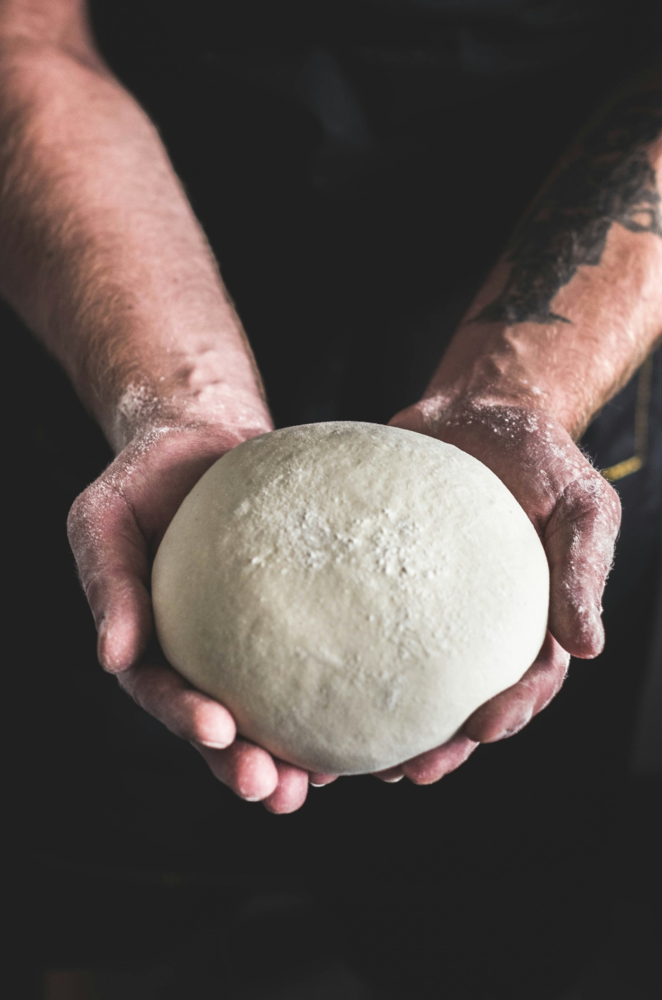
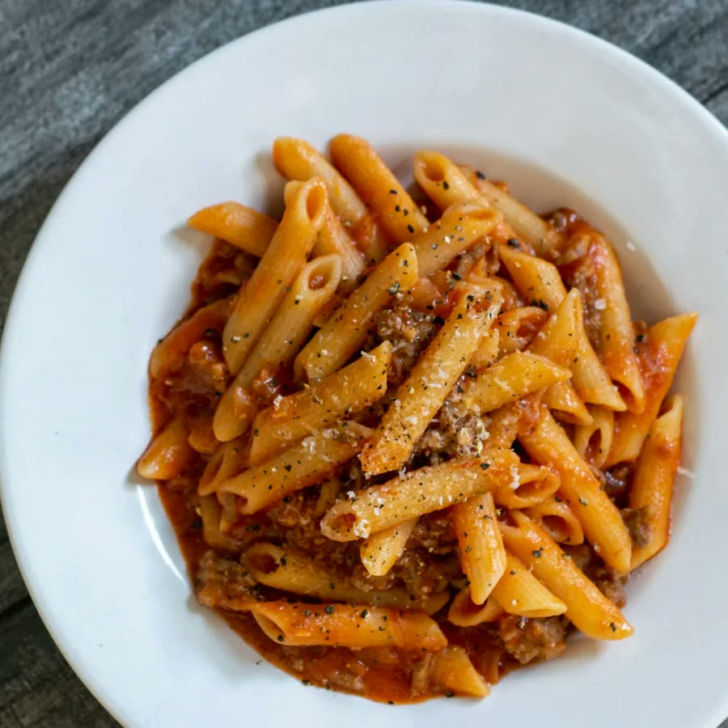
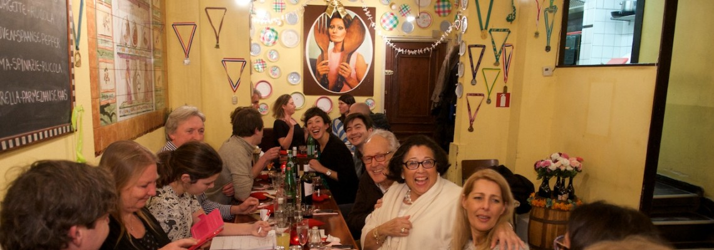

Pizza Taxi da Paolo e Seba
Originele Italiaanse pizza en pasta aan de Ceintuurbaan, midden in De Pijp. Met de lekkerste ingrediënten, met liefde gekookt, en het brood bakken we zelf.
Ma, di, do en zo 17:00 tot 22:00, vr en za vanaf 14:00

1993al sinds

Iedereen welkom, al sinds 1993
Pizza Taxi da Paolo e Seba staat bekend om zijn Italiaanse sfeer en eten. Met meer dan twintig jaar ervaring maken de pizzaioli Paolo en Sebastiano hier de lekkerste pizza's van Nederland.
Bij ons is iedereen welkom voor een originele Italiaanse pizza of pasta. We gebruiken de lekkerste ingrediënten, koken met liefde en het brood bakken we zelf. Heb je lekker en gezellig gegeten? Laat het anderen weten, bijvoorbeeld via Facebook, Iens of Tripadvisor. En heb je verbeterpunten, laat het ons dan vooral ook weten.
Eet smakelijk!
Pizze
- MarinaraV11,-tomatensaus, knoflook en oregano
- Margherita12,-tomatensaus, mozzarella en basilicum
- Capricciosa16,50tomatensaus, mozzarella, ham, olijven, champignons en oregano
- Attila16,50pesto, mozzarella, champignons, aubergine, verse tomaten en rucola
- Isabella16,50tomatensaus, mozzarella, spianata salami, chilipeper, knoflook, ui en paprika
- Quattro formaggi16,50tomatensaus, mozzarella, ricotta, gorgonzola en parmezaanse kaas
- Napoletana16,50tomatensaus, mozzarella, ansjovis, olijven en kappertjes
- Silvio16,50tomatensaus, mozzarella, gorgonzola, aubergine, ham, coppa di parma en rucola
- Taxi16,50tomatensaus, mozzarella, verse tomaat, aubergine en basilicum
- Quattro stagioni16,50tomatensaus, mozzarella, paprika, ham, champignons en olijven
- Pizza di mare16,50tomatensaus, mozzarella en zeevruchten met kruiden
- Tricolore16,50tomatensaus, pesto, mozzarella, parmaham, parmezaanse kaas en rucola
- Siciliana16,50tomatensaus, mozzarella, tonijn, champignons, olijven en ui
- Titta16,50tomatensaus, verse tomaten, buffelmozzarella, parmaham en basilicum
- Bufalina16,50tomatensaus, buffelmozzarella, verse tomaten, rucola en parmezaanse kaas
- Salsiccia16,50tomatensaus, mozzarella, champignons, saucijs, rucola en chilipeper
- Del salumiere16,50tomatensaus, mozzarella, napoletaanse salami, spianata salami en coppa di parma
- VegetarianaV16,50verse tomaten, champignons, courgette, aubergine en paprika (geen kaas)
- Calzone vesuvio16,50tomatensaus, mozzarella, ricotta, ham, oregano en basilicum
- Calzone vegetariano16,50tomatensaus, mozzarella, ricotta, courgettes, champignons en oregano
- Extra garnering3,-per extra topping


Pasta
Naar keuze met spaghetti of penne
- Mediterraneo15,50tomatensaus, aubergines, mozzarella en basilicum
- Salsiccia e melanzane15,50tomatensaus, aubergine, saucijs en chilipeper
- Funghi e gorgonzola15,50champignons en gorgonzola in roomsaus
- Bolognese15,50tomatensaus met gehakt
- Zucchine e gamberetti15,50courgettes en garnalen in tomatensaus
- OrtofrescoV15,50groenten in tomatensaus
- Tonno15,50tomatensaus, tonijn, ui, kappertjes en olijven
- Puttanesca15,50tomatensaus, olijven, kappertjes en ansjovis
- Frutti di mare16,50met zeevruchtensaus
- Gnocchi provola e basilico al forno16,50gnocchi uit de oven met provola kaas en basilicum
- Veggi ravioli16,50ravioli met gorgonzola en rucola in roomsaus
Lasagne
- Lasagne di carne16,-lasagne met bolognesesaus, béchamel en kaas
- Lasagne vegetariana16,-lasagne met ricotta, champignons, paprika, courgette en tomaten


Antipasti
- Bruschetta pomodoriV8,-geroosterd broodje met tomaten, olijfolie, basilicum, oregano en knoflook
- Focaccia al rosmarinoV9,-focaccia met rozemarijn
- Focaccia al prosciutto di parma e mozzarella13,-focaccia met parmaham en mozzarella
- Focaccia cipolla rossa e carciofiV10,50focaccia met rode ui en artisjokken
- BrucacciaV11,-focaccia met tomaten, basilicum, oregano, knoflook en rucola
- Gamberetti al vino bianco11,-gebakken garnalen in knoflook, kruiden en witte wijn
- Fungitello11,-gebakken aubergine, tomatensaus, basilicum en parmezaanse kaas
- Funghi trifolati11,-gebakken champignons in knoflook, peterselie en olijfolie
- Prosciutto di parma e mozzarella13,-parmaham met buffelmozzarella
- Tagliere di salumi, formaggio e olive15,50een selectie Italiaanse vleeswaren, kaas en olijven
- Carpaccio di manzo15,-dun gesneden ossenhaas met parmezaanse kaas, rucola, olijfolie en balsamico
Salades
- Rucolona9,-sla, rucola, tomaten, komkommer en parmezaanse kaas
- Di tonno10,-sla, rucola, tomaten, olijven, komkommer, tonijn en uien
- Caprese11,50sla, rucola, tomaten, buffelmozzarella en basilicum
- Insalata di pomodori e carciofi10,-sla, tomaten, artisjokken, komkommer, olijven en oregano
Dolci
- Gelato2,50bolletje ijs
- Torta del giorno7,50taart van de dag
- Sgroppino10,-citroensorbet met vodka en prosecco
- Tiramelosù7,50huisgemaakt toetje met lange vingers, mascarpone, slagroom, amaretto, espresso en cacao

Koffie & thee
- Espresso2,75
- Espresso doppio4,75
- Cappuccino3,75
- Caffè latte3,75
- Caffè corretto alla grappa6,75koffie met grappa
- Affogato4,75bolletje ijs met espresso overgoten
- Thee3,50
- Verse muntthee4,-
Bar
- Frisdranken3,-coca cola, coca cola zero, fanta orange, ice tea sparkling, sprite, cassis, bitter lemon, tonic, appelsap, mineraalwater
- Mineraalwater 0,75 l6,-
- Spritz aperol9,-
- Italiaans bier4,50
- Italiaans alcoholvrij bier4,50
- Italiaans speciaal bier6,50
Wijnen
- Glas wijn5,-rood, wit of rosé
- Fles wijn24,-rood, wit of rosé
- Glas prosecco6,50
- Fles prosecco25,-
Gedistilleerd
- Limoncello4,-
- Amaro, grappa, sambuca, amaretto6,-
- Vecchia Romagna6,-
Thuis eten? Dat kan
Zin in een pizza, pasta of gewoon een overheerlijke tiramisu tijdens het kijken van Netflix? Haal hem bij ons op: geef ons even een belletje en we zetten hem klaar.
Ben je wat luier en heb je geen zin om op te staan? We bezorgen ook via Uber Eats en Thuisbezorgd. Alvast buon appetito!
Ook te vinden op Uber Eats.
Een tafel reserveren
Bel ons of reserveer online via Bookdinners. Met een groep? Laat het ons weten, dan maken we er samen iets moois van.
- GroepenGraag reserveren voor groepen tussen de 5 en 32 personen.
- LunchLunchen kan uitsluitend op afspraak, met een minimum van 10 personen.
- BetalenMet pin of contant. Betalen met een creditcard is helaas niet mogelijk.
- AllergieGeef het door bij je reservering of aan tafel, we helpen je graag.

Openingstijden
- Maandag17:00 – 22:00
- Dinsdag17:00 – 22:00
- Woensdaggesloten
- Donderdag17:00 – 22:00
- Vrijdag14:00 – 22:00
- Zaterdag14:00 – 22:00
- Zondag17:00 – 22:00
Kom langs
Ceintuurbaan 1211072 GA Amsterdam
020 67 15 735
info@pizzataxidapaoloeseba.nl
Kom een keertje langs en proef Italië op zijn best!